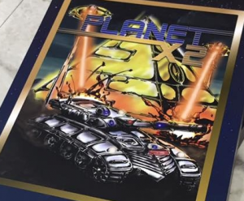

Früher wurden Spiele für den C64 in Schachteln ausgeliefert. Die Schachtel kaufte man im Laden und darin befand sich eine Diskette oder Kassette sowie eine Anleitung. Aber wie produziert man ein Spiel für den C64 heutzutage? Der 8-Bit-Guy hat das Spiel Planet X2 für den C64 selbst produziert - inklusive Soundtrack, Schachtel, Grafiken, Anleitung und Vertrieb. Den Prozess der Entwicklung hat er in dem kurzweiligen Video Planet X2 for the Commodore 64 dokumentiert. Hier fließen Entscheidungen darüber, wie die 64 kB RAM des C64 genutzt werden können, ebenso ein wie das Beta-Testing und die Bestellung und Produktion von Disketten.